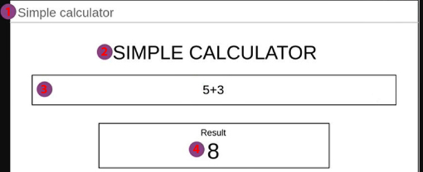
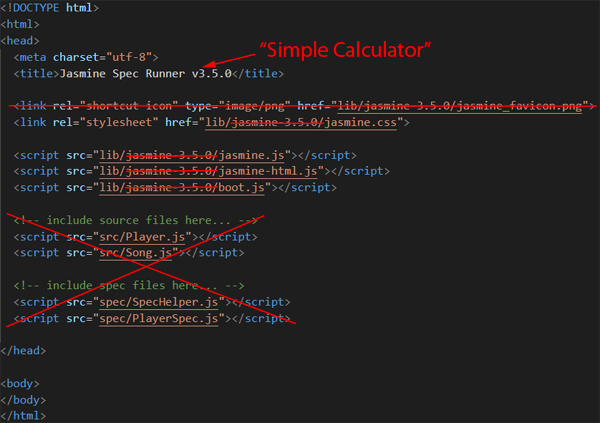

Simple Calculator
 |
|
Building the project
- Create the "simple-calculator.html";
- Create the "calculator.js" file to make operations (addition, substraction, multiplication and division);
- Create the "main.js" (handling "errors") with the listerner name "calculate"
Testing
Setup Jasmine
Get the "zip" file

-
From the (unzipped of) "jasmine-standalone-XXXXX.zip"
- We put, into the "lib" folder of our project, the following files (from the inside of "lib/jasmine-XXXXX/")...
- We copy, the "SpecRunner.html" into our project as well (under the "root" folder).
-
We get

- Changes in "spec-runner.html"

- We put, into the "lib" folder of our project, the following files (from the inside of "lib/jasmine-XXXXX/")...
Let's Make Tests
Test the functions in "calculator.js"
Naming convention
// Spec file extensions
*.spec.js
*.spec.js
Example
(target file name).spec.js
In our case
calculator.spec.js
(target file name).spec.js
In our case
calculator.spec.js
Example of the content of our "calculator.spec.js" (we could put any expression, but, it's better to put the name of the file so we could know - when getting the result of the test - the source)

Testing the "calculator.js" file...
"calculator.js"
|
"calculator.spec.js"
IMPORTANT: create new instance for EACH test
--> Each test will be independant from each other |
Execution of "spec-runner.html" (for testing)
|
|

Disabled specs
What? a spec that will report as pending and will not be executed
Why? 2 Common cases
- Changes in the code.
- TDD → Test Driven Development.
How? By adding a x in front of "it":
xit('should multiply total by number', function(){
const calculator = new Calculator();
calculator.total = 100;
calculator.multiply(2);
expect(calculator.total).toBe(200);
});disabled suites: by adding a x in front of "describe":
xdescribe('calculator.js', function() {
...
});